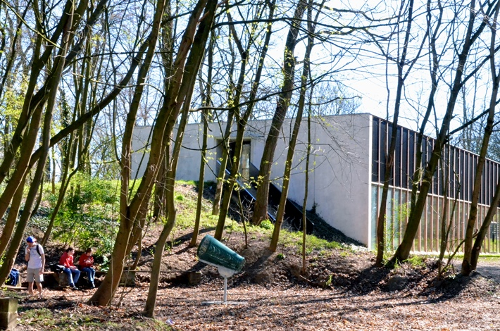

Met onze 269 leerlingen zijn we een "kleine grote" school in het Utopisch Gewest. Leerkrachten en directie zijn aanspreekbaar door iedereen, en we gaan er prat op dat we onze leerlingen na een tijdje door en door kennen. Ook dankzij intensieve leerlingenbegeleiding en de samenwerking met ons CLB proberen we ervoor te zorgen dat iedereen zich tiptop in zijn vel voelt.
Dankzij onze "grootste tuin van Eden" zijn we wellicht ook de groenste school van het gewest. Een bosverkenning voor biologie? Een frisse neus tijdens de speeltijd? Een buitenles bij mooi zomerweer? Geen enkel probleem!
Niet iedereen leert op dezelfde manier: de een moet de leerstof horen, de andere lezen, nog anderen zien, voelen of uitproberen. We proberen in enkele vakken de lesonderwerpen multi-disciplinair aan te bieden, zodat elke leerling zijn strategieën maximaal kan benutten. Het gebruik van informatica, projectwerk en regelmatige buitenschoolse activiteiten zijn daar natuurlijk een belangrijk onderdeel van: het Begeleid Zelfstandig Leren in de pratijk!
